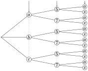
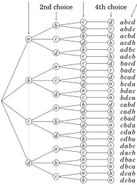
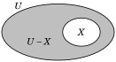

It may seem peculiar that a college-level text has a chapter on counting. At its most basic level, counting is a process of pointing to each object in a collection and calling off“one, two, three,...” until the quantity of objects is determined. How complex could that be? Actually, counting can become quite subtle, and in this chapter we explore some of its more sophisticated aspects. Our goal is still to answer the question “How many?” but we introduce mathematical techniques that bypass the actual process of counting individual objects. Sets play a big role in our discussions because the things we need to count are often naturally grouped together into a set. The concept of a list is also extremely useful.
3.1 Lists
A list is an ordered sequence of objects. A list is denoted by an opening parenthesis, followed by the objects, separated by commas, followed by a closing parenthesis. For example (a, b, c, d, e) is a list consisting of the first five letters of the English alphabet, in order. The objects a, b, c, d, e are called the entries of the list; the first entry is a, the second is b, and so on. If the entries are rearranged we get a different list, so, for instance,
(a, b, c, d, e) ≠ (b, a, c, d, e).
A list is somewhat like a set, but instead of being a mere collection of objects, the entries of a list have a definite order. For sets we have
{a, b, c, d, e} = {b, a, c, d, e},
but—as noted above—the analogous equality for lists does not hold.
Unlike sets, lists can have repeated entries. Thus (5,3,5,4,3,3) is a perfectly acceptable list, as is (S,O, S). The length of a list is its number of entries. So (5,3,5,4,3,3) has length six, and (S,O, S) has length three.
For more examples, (a,15) is a list of length two. And (0,(0,1,1)) is a list of length two whose second entry is a list of length three. Two lists are equal if they have exactly the same entries in exactly the same positions. Thus equal lists have the same number of entries. If two lists have different lengths, then they can not be equal. Thus (0,0,0,0,0,0) ≠ (0,0,0,0,0). Also
Chapter 3 ( g,r,o, c, e,r, y, l, i,s,t)≠()
because the list on the left has length eleven but the list on the right has just one entry (a piece of paper with some words on it).
There is one very special list which has no entries at all. It is called the empty list and is denoted (). It is the only list whose length is zero.
For brevity we often write lists without parentheses, or even commas. For instance, we may write (S,O, S) as SOS if there is no risk of confusion. But be alert that doing this can lead to ambiguity: writing (9,10,11) as 9 10 11 may cause us to confuse it with (9,1,0,1,1). Here it’s best to retain the parenthesis/comma notation or at least write the list as 9,10,11. A list of symbols written without parentheses and commas is called a string.
The process of tossing a coin ten times may be described by a string such as HHTHTTTHHT. Tossing it twice could lead to any of the outcomes HH, HT, TH or TT. Tossing it zero times is described by the empty list ().
Imagine rolling a dice five times and recording the outcomes. This might be described by the list ( , , , , ), meaning that you rolled first, then
, then , etc. We might abbreviate this list as , or 3,5,3,1,6.
Now imagine rolling a pair of dice, one white and one black. A typical outcome might be modeled as a set like { , }. Rolling the pair six times might be described with a list of six such outcomes:
({ , },{ , },{ , },{ , },{ , },{ , }).
We might abbreviate this list as , , , , , .
We study lists because many real-world phenomena can be described and understood in terms of them. Your phone number can be identified as a list of ten digits. (Order is essential, for rearranging the digits can produce a different phone number.) A byte is another important example of a list. A byte is simply a length-eight list of 0’s and 1’s. The world of information technology revolves around bytes. And the examples above show that multi-step processes (such as rolling a pair of dice six times) can be modeled as lists.
We now explore methods of counting or enumerating lists and processes.
3.2 The Multiplication Principle
Many practical problems involve counting the number of possible lists that satisfy some condition or property.
For example, suppose we make a list of length three having the property that the first entry must be an element of the set {a, b, c}, the second entry must be in {5,7} and the third entry must be in {a, x}. Thus (a,5, a) and (b,5, a) are two such lists. How many such lists are there all together? To answer this question, imagine making the list by selecting the first entry, then the second and finally the third. This is described in Figure 3.1. The choices for the first list entry are a, b or c, and the left of the diagram branches out in three directions, one for each choice. Once this choice is made there are two choices (5 or 7) for the second entry, and this is described graphically by two branches from each of the three choices for the first entry. This pattern continues for the choice for the third entry, which is either a or x. Thus, in the diagram there are 3 · 2 · 2 = 12 paths from left to right, each corresponding to a particular choice for each entry in the list. The corresponding lists are tallied at the far-right end of each path. So, to answer our original question, there are 12 possible lists with the stated properties.
Resulting list
first choice second choice third choice

(a,5,a)
(a,5, x)
(a,7,a)
(a,7, x)
(b,5,a)
(b,5, x)
(b,7,a)
(b,7, x)
(c,5,a)
(c,5, x)
(c,7,a)
(c,7, x)
Figure 3.1. Constructing lists of length 3
In the above example there are 3 choices for the first entry, 2 choices for the second entry, and 2 for the third, and the total number of possible lists is the product of choices 3 · 2 · 2 = 12. This kind of reasoning is an instance of what we will call the multiplication principle. We will do one more example before stating this important idea.
Consider making a list of length 4 from the four letters {a, b, c, d}, where the list is not allowed to have a repeated letter. For example, abcd and cadb are allowed, but aabc and cacb are not allowed. How many such lists are there?
Let’s analyze this question with a tree representing the choices we have for each list entry. In making such a list we could start with the first entry: we have 4 choices for it, namely a, b, c or d, and the left side of the tree branches out to each of these choices. But once we’ve chosen a letter for the first entry, we can’t use that letter in the list again, so there are only 3 choices for the second entry. And once we’ve chosen letters for the first and second entries we can’t use these letters in the third entry, so there are just 2 choices for it. By the time we get to the fourth entry we are forced to use whatever letter we have left; there is only 1 choice.
The situation is described fully in the below tree showing how to make all allowable lists by choosing 4 letters for the first entry, 3 for the second entry, 2 for the third entry and 1 for the fourth entry. We see that the total number of lists is the product 4 · 3 · 2 · 1 = 24.
1st choice 3rd choice Resulting list

Figure 3.2. Constructing lists from letters in {a, b, c, d}, without repetition.
These trees show that the number of lists constructible by some specified process equals the product of the numbers of choices for each list entry. We summarize this kind of reasoning as an important fact.
Fact 3.1 (Multiplication Principle) Suppose in making a list of length n there are a1 possible choices for the first entry, a2 possible choices for the second entry, a3 possible choices for the third entry, and so on. Then the total number of different lists that can be made this way is the product a1 · a2 · a3 · ··· · an.
In using the multiplication principle you do not need to draw a tree with a1 · a2 ····· an branches. Just multiply the numbers!
Example 3.1 A standard license plate consists of three letters followed by four digits. For example, JRB-4412 and MMX-8901 are two standard license plates. How many different standard license plates are possible? Solution: A license plate such as JRB-4412 corresponds to a length-7 list (J, R,B,4,4,1,2), so we just need to count how many such lists are possible. We use the multiplication principle. There are a1 = 26 possibilities (one for each letter of the alphabet) for the first entry of the list. Similarly, there are a2 = 26 possibilities for the second entry and a3 = 26 possibilities for the third. There are a4 = 10 possibilities for the fourth entry. Likewise a5 = a6 = a7 = 10. So there is a total of a1 · a2 · a3 · a4 · a5 · a6 · a7 = 26 · 26 · 26 · 10 · 10 · 10 · 10 = 175,760,000 possible standard license plates.
Example 3.2 In ordering a café latte, you have a choice of whole, skim or soy milk; small, medium or large; and either one or two shots of espresso. How many choices do you have in ordering one drink? Solution: Your choice is modeled by a list of form (milk, size, shots). There are 3 choices for the first entry, 3 for the second and 2 for the third. By the multiplication principle, the number of choices is 3 · 3 · 2 = 18.
There are two types of list-counting problems. On one hand, there are situations in which list entries can be repeated, as in license plates or telephone numbers. The sequence CCX-4144 is a perfectly valid license plate in which the symbols C and 4 appear more than once. On the other hand, for some lists repeated symbols do not make sense or are not allowed, as in the (milk, size, shots) list from Example 3.2. We say repetition isallowed in the first type of list and repetition is not allowed in the second kind of list. (We will call a list in which repetition is not allowed a non-repetitive list.) The next example illustrates the difference.
Example 3.3 Consider lists of length 4 made with symbols A,B,C,D,E,F,G. (a) How many such lists are possible if repetition is allowed? (b) How many such lists are possible if repetition is not allowed? (c) How many are there if repetition is not allowed and the list has an E? (d) How many are there if repetition is allowed and the list has an E? Solutions: (a) Imagine the list as containing four boxes that we fill with selections
from the letters A, B, C, D, E, F and G, as illustrated below.
Chapter 3 (,,,)
7 choices
7 choices
7 choices
7 choices
We have 7 choices in filling each box. The multiplication principle says
the total number of lists that can be made this way is 7 · 7 · 7 · 7 = 2401.
(b) This problem is the same as the previous one except that repetition
is not allowed. We have seven choices for the first box, but once it is
filled we can no longer use the symbol that was placed in it. Hence
there are only six possibilities for the second box. Once the second
box has been filled we have used up two of our letters, and there are
only five left to choose from in filling the third box. Finally, when the
third box is filled we have only four possible letters for the last box.
Chapter 3 (,,,)
7 choices
6 choices
5 choices
4 choices
Thus there are 7 · 6 · 5 · 4 = 840 lists in which repetition does not occur. (c) We are asked to count the length-4 lists in which repetition is not
allowed and the symbol E must appear somewhere in the list. Thus E
occurs once and only once in each list. Let us divide these lists into
four categories depending on whether the E occurs as the first, second,
third or fourth entry. These four types of lists are illustrated below.
Type 1 Type 2 Type 3 Type 4
Chapter 3 (E,,,)(,E,,)(,,E,)(,,,E)
6 choices 6 choices 6 choices 6 choices
5 choices 5 choices 5 choices 5 choices
4 choices 4 choices 4 choices 4 choices
Consider lists of the first type, in which the E appears in the first
entry. We have six remaining choices (A, B, C, D, F or G) for the second
entry, five choices for the third entry and four choices for the fourth
entry. Hence there are 6 · 5 · 4 = 120 lists having an E in the first entry.
As shown above, there are also 6 · 5 · 4 = 120 lists having an E in the
second, third or fourth entry. So there are 120 + 120 + 120 + 120 = 480
lists with exactly one E.
(d) Now we seek the number of length-4 lists where repetition is allowed
and the list must contain an E. Here is our strategy: By Part (a) of
this exercise there are 7·7·7·7 = 74 = 2401 lists with repetition allowed.
Obviously this is not the answer to our current question, for many of
these lists contain no E. We will subtract from 2401 the number of
lists that do not contain an E. In making a list that does not contain
an E, we have six choices for each list entry (because we can choose
any one of the six letters A, B, C, D, F or G). Thus there are 6·6·6·6 =
64 = 1296 lists without an E. So the answer to our question is that
there are 2401 − 1296 = 1105 lists with repetition allowed that contain
at least one E.
Before moving on from Example 3.3, let’s address an important point. Perhaps you wondered if Part (d) could be solved in the same way as Part (c). Let’s try doing it that way. We want to count the length-4 lists (repetition allowed) that contain at least one E. The following diagram is adapted from Part (c). The only difference is that there are now seven choices in each slot because we are allowed to repeat any of the seven letters.
Type 1 Type 2 Type 3 Type 4
We get a total of 73 + 73 + 73 + 73 = 1372 lists, an answer that is larger than the (correct) value of 1105 from our solution to Part (d) above. It is easy to see what went wrong. The list (E, E, A,B) is of type 1 and type 2, so it got counted twice. Similarly (E, E,C, E) is of type 1, 2 and 4, so it got counted three times. In fact, you can find many similar lists that were counted multiple times. In solving counting problems, we must always be careful to avoid this kind of double-counting or triple-counting, or worse.
The next section presents two new counting principles that codify the kind of thinking we used in parts (c) and (d) above. Combined with the multiplication principle, they solve complex counting problems in ways that avoid the pitfalls of double counting. But first, one more example of the multiplication principle highlights another pitfall to be alert to.
Example 3.4 A non-repetitive list of length 5 is to be made from the symbols A, B, C, D, E, F, G. The first entry must be either a B, C or D, and the last entry must be a vowel. How many such lists are possible? Solution: Start by making a list of five boxes. The first box must contain either B, C or D, so there are three choices for it.
Now there are 6 letters left for the remaining 4 boxes. The knee-jerk action is to fill them in, one at a time, using up an additional letter each time.
Chapter 3 (,,,,)
3 choices
6 choices
5 choices
4 choices
But when we get to the last box, there is a problem. It is supposed to contain a vowel, but for all we know we have already used up one or both vowels in the previous boxes. The multiplication principle breaks down because there is no way to tell how many choices there are for the last box.
The correct way to solve this problem is to fill in the first and last boxes (the ones that have restrictions) first.
Then fill the remaining middle boxes with the 5 remaining letters.
Chapter 3 (,,,,)
3 choices 2 choices
5 choices
4 choices
3 choices
By the multiplication principle, there are 3 · 5 · 4 · 3 · 2 = 360 lists.
The new principles to be introduced in the next section are usually used in conjunction with the multiplication principle. So work a few exercises now to test your understanding of it.
Exercises for Section 3.2
Consider lists made from the letters T, H, E, O, R, Y, with repetition allowed. (a) How many length-4 lists are there? (b) How many length-4 lists are there that begin with T ? (c) How many length-4 lists are there that do not begin with T ?
Airports are identified with 3-letter codes. For example, Richmond, Virginia has the code RIC, and Memphis, Tennessee has MEM. How many different 3-letter codes are possible?
How many lists of length 3 can be made from the symbols A, B, C, D, E, F if... (a) ... repetition is allowed. (b) ... repetition is not allowed. (c) ... repetition is not allowed and the list must contain the letter A. (d) ... repetition is allowed and the list must contain the letter A.
In ordering coffee you have a choice of regular or decaf; small, medium or large; here or to go. How many different ways are there to order a coffee?
This problem involves 8-digit binary strings such as 10011011 or 00001010 (i.e., 8-digit numbers composed of 0’s and 1’s). (a) How many such strings are there? (b) How many such strings end in 0? (c) How many such strings have 1’s for their second and fourth digits? (d) How many such strings have 1’s for their second or fourth digits?
You toss a coin, then roll a dice, and then draw a card from a 52-card deck. How many different outcomes are there? How many outcomes are there in which the dice lands onHow many outcomes are there in which the dice lands on an odd number? How many outcomes are there in which the dice lands on an odd number and the card is a King?
This problem concerns 4-letter codes made from the letters A, B, C, D, ... , Z. (a) How many such codes can be made? (b) How many such codes have no two consecutive letters the same?
A coin is tossed 10 times in a row. How many possible sequences of heads and tails are there?
A new car comes in a choice of five colors, three engine sizes and two transmissions. How many different combinations are there? There are many possible outcomes, such as How many different outcomes are possible?
3.3 The Addition and Subtraction Principles
We now discuss two new counting principles, the addition and subtraction principles. Actually, they are not entirely new—you’ve used them intuitively for years. Here we give names to these two fundamental thought patterns, and phrase them in the language of sets. Doing this helps us recognize when we are using them, and, more importantly, it helps us see new situations in which they can be used.
The addition principle simply asserts that if a set can be broken into pieces, then the size of the set is the sum of the sizes of the pieces.
Fact 3.2 (Addition Principle) Suppose a finite set X can be decomposed as a union X = X1 ∪ X2 ∪···∪ Xn, where Xi ∩ X j = ∅ whenever i ≠ j. Then X = X+ X+···+ X.
X X
In our first example we will rework an instance where we used the addition principle naturally, without comment: in Part (c) of Example 3.3.
Example 3.5 How many length-4 non-repetitive lists can be made from the symbols A, B, C, D, E, F, G, if the list must contain an E? In Example 3.3 (c) our approach was to divide these lists into four types, depending on whether the E is in the first, second, third or fourth position.
Type 1 Type 2 Type 3 Type 4
Then we used the multiplication principle to count the lists of type 1. There are 6 choices for the second entry, 5 for the third, and 4 for the fourth. This is indicated above, where the number below a box is the number of choices we have for that position. The multiplication principle implies that there are 6 · 5 · 4 = 120 lists of type 1. Similarly there are 6 · 5 · 4 = 120 lists of types 2, 3, and 4.
X
We then used the addition principle intuitively, conceiving of the lists to be counted as the elements of a set X , broken up into parts X1, X2, X3 and X4, which are the lists of types 1, 2, 3 and 4, respectively.
The addition principle says that the number of lists that contain an E is |X | = |X1|+|X2|+|X3|+|X4| = 120 + 120 + 120 + 120 = 480.
We use the addition principle when we need to count the things in some set X . If we can find a way to break X up as X = X1∪ X2∪···∪ Xn, where each Xi is easier to count than X , then the addition principle gives an answer of |X | = |X1|+|X2|+|X3|+···+|Xn|.
But for this to work the intersection of any two pieces Xi must be ∅, as stated in Fact 3.2. For instance, if X1 and X2 shared an element, then that element would be counted once in |X1| and again in |X2|, and we’d get |X | < |X1|+|X2|+···+|Xn|. (This is precisely the double counting issue mentioned after Example 3.3.)
Example 3.6 How many even 5-digit numbers are there for which no digit is 0, and the digit 6 appears exactly once? For instance, 55634 and 16118 are such numbers, but not 63304 (has a 0), nor 63364 (too many 6’s), nor 55637 (not even). Solution: Let X be the set of all such numbers. The answer will be |X |, so our task is to find |X |. Put X = X1 ∪ X2 ∪ X3 ∪ X4 ∪ X5, where Xi is the set of those numbers in X whose ith digit is 6, as diagramed below. Note Xi∩X j = ∅ whenever i ≠ j because the numbers in Xi have their 6 in a different position than the numbers in X j. Our plan is to use the multiplication principle to compute each |Xi|, and follow this with the addition principle.
The first digit of any number in X1 is 6, and the three digits following it can be any of the ten digits except 0 (not allowed) or 6 (already appears). Thus there are eight choices for each of three digits following the first 6. But because any number in X1 is even, its final digit must be one of 2,4 or 8, so there are just three choices for this final digit. By the multiplication principle, |X1| = 8 · 8 · 8 · 3 = 1536. Likewise |X2| = |X3| = |X4| = 8 · 8 · 8 · 3 = 1536.
But X5 is slightly different because we do not choose the final digit, which is already 6. The multiplication principle gives |X5| = 8 · 8 · 8 · 8 = 4096.
The addition principle gives our final answer. The number of even 5-digit numbers with no 0’s and one 6 is |X | = |X1|+|X2|+|X3|+|X4|+|X5| = 1536 + 1536 + 1536 + 1536 + 4096 = 10,240.
Now we introduce our next counting

method, the subtraction principle. To set it up, imagine that a set X is a subset of a universal set U, as shown on the right. The complement \(\overline{X}\) = U − X is shaded. Suppose we wanted to count the things in this shaded region. Surely this is the number of things in U minus the number of things in X , which is to say U − X = |U|−|X |. That is the subtraction principle.
Fact 3.3 (Subtraction Principle)
If X is a subset of a finite set U, then \(\left|\overline{X}\right|\) = |U|−|X |.
In other words, if X ⊆ U then U − X = |U|−|X |.
The subtraction principle is used in situations where it is easier to count the things in some set U that we wish to exclude from consideration than it is to count those things that are included. We have seen this kind of thinking before. We quietly and naturally used it in part (d) of Example 3.3. For convenience we repeat that example now, casting it into the language of the subtraction principle.
Example 3.7 How many length-4 lists can be made from the symbols A, B, C, D, E, F, G if the list has at least one E, and repetition is allowed? Solution: Such a list might contain one, two, three or four E’s, which could occur in various positions. This is a fairly complex situation.
But it is very easy to count the set U of all lists of length 4 made from A, B, C, D, E, F, G if we don’t care whether or not the lists have any E’s. The multiplication principle says |U| = 7 · 7 · 7 · 7 = 2401.
It is equally easy to count the set X of those lists that contain no E’s. The multiplication principle says |X | = 6 · 6 · 6 · 6 = 1296.
We are interested in those lists that have at least one E, and this is the set U − X . By the subtraction principle, the answer to our question is |U − X | = |U|−|X | = 2401 − 1296 = 1105.
As we continue with counting we will have many opportunities to use the multiplication, addition and subtraction principles. Usually these will arise in the context of other counting principles that we have yet to explore. It is thus important that you solidify the current ideas now, by working some exercises before moving on.
Exercises for Section 3.3
Five cards are dealt offof a standard 52-card deck and lined up in a row. How many such lineups are there that have at least one red card? How many such lineups are there in which the cards are either all black or all hearts?
Five cards are dealt offof a standard 52-card deck and lined up in a row. How many such lineups are there in which all 5 cards are of the same suit?
Five cards are dealt offof a standard 52-card deck and lined up in a row. How many such lineups are there in which all 5 cards are of the same color (i.e., all black or all red)?
Five cards are dealt offof a standard 52-card deck and lined up in a row. How many such lineups are there in which exactly one of the 5 cards is a queen?
How many integers between 1 and 9999 have no repeated digits? How many have at least one repeated digit?
Consider lists made from the symbols A, B, C, D, E, with repetition allowed. (a) How many such length-5 lists have at least one letter repeated? (b) How many such length-6 lists have at least one letter repeated?
A password on a certain site must be five characters long, made from letters of the alphabet, and have at least one upper case letter. How many different passwords are there? What if there must be a mix of upper and lower case?
This problem concerns lists made from the letters A, B, C, D, E, F, G, H, I, J. (a) How many length-5 lists can be made from these letters if repetition is not allowed and the list must begin with a vowel? (b) How many length-5 lists can be made from these letters if repetition is not allowed and the list must begin and end with a vowel? (c) How many length-5 lists can be made from these letters if repetition is not allowed and the list must contain exactly one A?
Consider lists of length 6 made from the letters A, B, C, D, E, F, G, H. How many such lists are possible if repetition is not allowed and the list contains two consecutive vowels?
Consider the lists of length six made with the symbols P, R, O, F, S, where repetition is allowed. (For example, the following is such a list: (P,R,O,O,F,S).) How many such lists can be made if the list must end in an S and the symbol O is used more than once?
How many integers between 1 and 1000 are divisible by 5? How many are not divisible by 5?
Six math books, four physics books and three chemistry books are arranged on a shelf. How many arrangements are possible if all books of the same subject are grouped together?
3.4 Factorials and Permutations
In working examples from the previous two sections you may have noticed that we often need to count the number of non-repetitive lists of length n that are made from n symbols. This kind of problem occurs so often that a special idea, called a factorial, is used to handle it.
The table below motivates this. The first column lists successive integer values n, from 0 onward. The second contains a set {a, b,...} of n symbols. The third column shows all the possible non-repetitive lists of length n that can be made from these symbols. Finally, the last column tallies up how many lists there are of that type. When n = 0 there is only one list of length 0 that can be made from 0 symbols, namely the empty list (). Thus the value 1 is entered in the last column of that row.
n Symbols Non-repetitive lists of length n made from the symbols n!
0 {} ( ) 1
1 {a} a 1
2 {a, b} ab, ba 2
3 {a, b, c} abc, acb, bac, bca, cab, cba 6
abcd, acbd, bacd, bcad, cabd, cbad,
abdc, acdb, badc, bcda, cadb, cbda,
4 {a, b, c, d} 24
adbc, adcb, bdac, bdca, cdab, cdba,
dabc, dacb, dbac, dbca, dcab, dcba
... ... ... ...
For n > 0, the number that appears in the last column can be computed using the multiplication principle. The number of non-repetitive lists of length n that can be made from n symbols is n(n−1)(n−2)···3·2·1. Thus, for instance, the number in the last column of the row for n = 4 is 4 · 3 · 2 · 1 = 24.
The number that appears in the last column of Row n is called the factorial of n. It is denoted with the special symbol n!, which we pronounce as “n factorial." Here is the definition:
Definition 3.1 If n is a non-negative integer, then n! is the number of lists of length n that can be made from n symbols, without repetition. Thus 0! = 1 and 1! = 1. If n > 1, then n! = n(n − 1)(n − 2)···3 · 2 · 1.
It follows that 0! = 1
1! = 1
2! = 2 · 1 = 2
3! = 3 · 2 · 1 = 6
4! = 4 · 3 · 2 · 1 = 24
5! = 5 · 4 · 3 · 2 · 1 = 120
6! = 6 · 5 · 4 · 3 · 2 · 1 = 720, and so on.
Students are often tempted to say 0! = 0, but this is wrong. The correct value is 0! = 1, as the above definition and table show. Here is another way to see that 0! must equal 1: Notice that 5! = 5 · 4 · 3 · 2 · 1 = 5 · (4 · 3 · 2 · 1) = 5 · 4!. Also 4! = 4 · 3 · 2 · 1 = 4 · (3 · 2 · 1) = 4 · 3!. Generalizing this, we get a formula.
n! = n · (n − 1)! (3.1)
Plugging in n = 1 gives 1! = 1·(1−1)! = 1·0!, that is, 1! = 1·0!. If we mistakenly thought 0! were 0, this would give the incorrect result 1! = 0.
Example 3.8 This problem involves making lists of length seven from the letters a, b, c, d, e, f and g. (a) How many such lists are there if repetition is not allowed? (b) How many such lists are there if repetition is not allowed and the first
two entries must be vowels?
(c) How many such lists are there in which repetition is allowed, and the
list must contain at least one repeated letter?
To answer the first question, note that there are seven letters, so the number of lists is 7! = 5040. To answer the second question, notice that the set {a, b, c, d, e, f, g} contains two vowels and five consonants. Thus in making the list the first two entries must be filled by vowels and the final five must be filled with consonants. By the multiplication principle, the number of such lists is 2 · 1 · 5 · 4 · 3 · 2 · 1 = 2!5! = 240.
To answer part (c) we use the subtraction principle. Let U be the set of all lists made from a, b, c, d, e, f, g, with repetition allowed. The multiplication principle gives |U| = 7 · 7 · 7 · 7 · 7 · 7 · 7 = 77 = 823,543. Notice that U includes lists that are non-repetitive, like (a,g,f,b,d,c,e), as well as lists that have some repetition, like (f,g,b,g,a,a,a). We want to find the number of lists that have at least one repeated letter, so we will subtract away from U all those lists that have no repetition. Let X ⊆ U be those lists that have no repetition, so |X | = 7!. Thus the answer to our question is |U − X | = |U|−|X | = 77 − 7! = 823,543 − 5040 = 818,503.
In part (a) of Example 3.8 we counted the number of non-repetitive lists made from all seven of the symbols in the set X = {a, b, c, d, e, f, g}, and there were 7! = 5040 such lists. Any such list, such as bcedagf, gfedcba or abcdefg is simply an arrangement of the elements of X in a row. There is a name for such an arrangement. It is called a permutation of X .
A permutation of a set is an arrangement of all of the set’s elements in a row, that is, a list without repetition that uses every element of the set. For example, the permutations of the set X = {1,2,3} are the six lists
123, 132, 213, 231, 312, 321.
That we get six different permutations of X is predicted by Definition 3.1, which says there are 3! = 3 · 2 · 1 = 6 non-repetitive lists that can be made from the three symbols in X .
Think of the numbers 1, 2 and 3 as representing three books. The above shows that there are six ways to arrange them on a shelf.
From a deck of cards you take the four queens and lay them in a row. By the multiplication principle there are 4! = 4 · 3 · 2 · 1 = 24 ways to do this, that is, there are 24 permutations of the set of four Queen cards.
In general, a set with n elements will have n! different permutations.
Above, the set {1,2,3} has 3! = 6 permutations, while 4! = 24 permutations. The set {a,b,c,d,e,f,g} has 7! = though there’s not much point in listing them all out. The important thing is that the factorial counts the number of permutations.
In saying a permutation of a set is an arrangement of its elements in a row, we are speaking informally because sometimes the elements are not literally in a row. Imagine a classroom of 20 desks, in four rows of five desks each. Let X be a class (set) of 20 students. If the students walk in and seat themselves, one per desk, we can regard this as a permutation of the 20 students because we can number the desks 1,2,3,...,20 and in this sense the students have arranged themselves in a list of length 20. There are 20! = 2,432,902,008,176,640,000 permutations of the students.
Now we discuss a variation of the idea of a permutation of a set X . Imagine taking some number k ≤|X | of elements from the set X and then arranging them in a row. The result is what we call a k-permutation of X . A permutation of X is a non-repetitive list made from all elements of X . A k-permutation of X is a non-repetitive list made from k elements of X .
For example, take X = {a, b, c, d}. The 1-permutations of X are the lists we could make with just one element from X . There are only 4 such lists:
a b c d.
The 2-permutations of X are the non-repetitive lists that we could make from two elements of X . There are 12 of them:
ab ac ad ba bc bd ca cb cd da db dc.
Even before writing them all down, we’d know there are 12 of them because in making a non-repetitive length-2 list from X we have 4 choices for the first element, then 3 choices for the second, so by the multiplication principle the total number of 2-permutations of X is 4 · 3 = 12.
Now let’s count the number of 3-permutations of X . They are the length3 non-repetitive lists made from elements of X . The multiplication principle says there will be 4 · 3 · 2 = 24 of them. Here they are:
abc acb bac bca cab cba
abd adb bad bda dab dba
acd adc cad cda dac dca
bcd bdc cbd cdb dbc dcb
The 4-permutations of X are the non-repetitive lists made from all 4 elements of X . These are simply the 4! = 4 · 3 · 2 · 1 = 24 permutations of X .
Let’s go back and think about the 0-permutations of X . They are the non-repetitive lists of length 0 made from the elements of X . Of course there is only one such list, namely the empty list ().
Now we are going to introduce some notation. The expression P(n, k) denotes the number of k-permutations of an n-element set. By the examples on this page we have P(4,0) = 1, P(4,1) = 4, P(4,2) = 12, P(4,3) = 24, and P(4,4) = 24.
What about, say, P(4,5)? This is the number of 5-permutations of a 4-element set, that is, the number of non-repetitive length-5 lists that can be made from 4 symbols. There is no such list, so P(4,5) = 0.
If n > 0, then P(n, k) can be computed with the multiplication principle. In making a non-repetitive length-k list from n symbols we have n choices for the 1st entry, n − 1 for the 2nd, n − 2 for the 3rd, and n − 3 for the 4th.
···
1st 2nd 3rd 4th 5th kth
Notice that the number of choices for the ith position is n−i+1. For example, the 5th position has n − 5 + 1 = n − 4 choices. Continuing in this pattern, the last (kth) entry has n − k + 1 choices. Therefore
P(n, k) = n(n − 1)(n − 2)···(n − k + 1). (3.2)
All together there are k factors in this product, so to compute P(n, k) just perform n(n−1)(n−2)(n−3)··· until you’ve multiplied k numbers. Examples:
Note P(10,11) = 0, as the 11th factor in the product is 0. This makes sense because P(10,11) is the number of non-repetitive length-11 lists made from just 10 symbols. There are no such lists, so P(10,11) = 0 is right. In fact you can check that Equation (3.2) gives P(n, k) = 0 whenever k > n.
Also notice above that P(10,10) = 10!. In general P(n, n) = n!.
We now derive another formula for P(n, k), one that works for 0 ≤ k ≤ n. Using Equation (3.2) with cancellation and the definition of a factorial,
P(n, k) = n(n − 1)(n − 2)···(n − k + 1)
n(n − 1)(n − 2)···(n − k + 1)(n − k)(n − k − 1)···3 · 2 · 1 n!
= = .
(n − k)(n − k − 1)···3 · 2 · 1 (n − k)!
To illustrate, let’s find P(8,5) in two ways. Equation (3.2) says P(8,5) =
8! 8! 40,320
8·7·6·5·4 = 6720. By the above formula, P(8,5) = = = = 6720.
(8 − 5)! 3! 6
We summarize these ideas in the following definition and fact.
Fact 3.4 A k-permutation of an n-element set is a non-repetitive length-k list made from elements of the set. Informally we think of a k-permutation as an arrangement of k of the set’s elements in a row. The number of k-permutations of an n-element set is denoted P(n, k), and
P(n, k) = n(n − 1)(n − 2)···(n − k + 1).
n!
If 0 ≤ k ≤ n, then P(n, k) = n(n − 1)(n − 2)···(n − k + 1) = .
(n − k)!
Notice that P(n,0) = \(\frac{n!}{(n-0)!}\) =\(\frac{n!}{n!}\) = 1, which makes sense because only one list of length 0 can be made from n symbols, namely the empty list. Also P(0,0) = \(\frac{0!}{(0-0)!}\) =\(\frac{0!}{0!}\) =\(\frac{1}{1}\) = 1, which is to be expected because there is only one list of length 0 that can be made with 0 symbols, again the empty list.
Example 3.9 Ten contestants run a marathon. All finish, and there are no ties. How many different possible rankings are there for first-, second-and third-place? Solution: Call the contestants A, B, C, D, E, F, G, H, I and J. A ranking of winners can be regarded as a 3-permutation of the set of 10 contestants. For example, ECH means E in first-place, C in second-place and H in third. Thus there are P(10,3) = 10 · 9 · 8 = 720 possible rankings.
Example 3.10 You deal five cards offof a standard 52-card deck, and line them up in a row. How many such lineups are there that either consist of all red cards, or all clubs? Solution: There are 26 red cards. The number of ways to line up five of them is P(26,5) = 26 · 25 · 24 · 23 · 22 = 7,893,600. There are 13 club cards (which are black). The number of ways to line up five of them is P(13,5) = 13 · 12 · 11 · 10 · 9 = 154,440. By the addition principle, the answer to our question is that there are P(26,5)+ P(13,5) = 8,048,040 lineups that are either all red cards, or all club cards.
Notice that we do not need to use the notation P(n, k) to solve the problems on this page. Straightforward applications of the multiplication and addition principles would suffice. However, the P(n, k) notation often proves to be a convenient shorthand.
Exercises for Section 3.4
What is the smallest n for which n! has more than 10 digits?
For which values of n does n! have n or fewer digits?
How many 5-digit positive integers are there in which there are no repeated digits and all digits are odd?
Using only pencil and paper, find the value of\(\frac{100!}{95!}\).
Using only pencil and paper, find the value of\(\frac{120!}{118!}\).
There are two 0’s at the end of 10! = 3,628,800. Using only pencil and paper, determine how many 0’s are at the end of the number 100!.
Find how many 9-digit numbers can be made from the digits 1, 2, 3, 4, 5, 6, 7, 8, 9 if repetition is not allowed and all the odd digits occur first (on the left) followed by all the even digits (i.e., as in 137598264, but not 123456789).
Compute how many 7-digit numbers can be made from the digits 1, 2, 3, 4, 5, 6, 7 if there is no repetition and the odd digits must appear in an unbroken sequence. (Examples: 3571264 or 2413576 or 2467531, etc., but not 7234615.)
How many permutations of the letters A, B, C, D, E, F, G are there in which the three letters ABC appear consecutively, in alphabetical order?
How many permutations of the digits 0, 1, 2, 3, 4, 5, 6, 7, 8, 9 are there in which the digits alternate even and odd? (For example, 2183470965.)
You deal 7 cards offof a 52-card deck and line them up in a row. How many possible lineups are there in which not all cards are red?
You deal 7 cards offof a 52-card deck and line them up in a row. How many possible lineups are there in which no card is a club?
How many lists of length six (with no repetition) can be made from the 26 letters of the English alphabet?
Five of ten books are arranged on a shelf. In how many ways can this be done?
In a club of 15 people, we need to choose a president, vice-president, secretary, and treasurer. In how many ways can this be done?
How many 4-permutations are there of the set {A,B,C,D,E,F} if whenever A appears in the permutation, it is followed by E?
Three people in a group of ten line up at a ticket counter to buy tickets. How many lineups are possible?
There is a very interesting function Γ : [0,∞) → ℝ called the gamma function. It is defined as Γ(x) = \(\int_0^\infty\)tx−1e−tdt. It has the remarkable property that if x ∈ ℕ, then Γ(x) = (x − 1)!. Check that this is true for x = 1,2,3,4. Notice that this function provides a way of extending factorials to numbers other than integers. Since Γ(n) = (n − 1)! for all n ∈ ℕ, we have the formula n! = Γ(n + 1). But Γ can be evaluated at any number in [0,∞), not just at integers, so we have a formula for n! for any real number n ∈ [0,∞). Extra credit: Compute π!.
3.5 Counting Subsets
The previous section dealt with counting lists made by selecting k entries from a set of n elements. We turn now to a related question: How many subsets can be made by selecting k elements from a set with n elements?
To see the difference between these two problems, take A = {a, b, c, d, e}. Consider the non-repetitive lists made from selecting two elements from A. Fact 3.4 says there are P(5,2) = 5 · 4 = 20 such lists, namely
The reason that there are more lists than subsets is that changing the order of the entries of a list produces a different list, but changing the order of the elements of a set does not change the set. Using elements a, b ∈ A, we can make two lists (a, b) and (b, a), but only one subset {a, b}.
This section is concerned with counting subsets, not lists. As noted above, the basic question is this: How many subsets can be made by choosing k elements from an n-element set? We begin with some notation that gives a name to the answer to this question.
Definition 3.2 If n and k are integers, then \(\binom{n}{k}\) denotes the number of subsets that can be made by choosing k elements from an n-element set. We read \(\binom{n}{k}\) as “n choose k.” (Some textbooks write C(n, k) instead of \(\binom{n}{k}\).)
This is illustrated in the following table that tallies the k-element subsets of the 4-element set A = {a, b, c, d}, for various values of k.
The values of k appear in the far-left column of the table. To the right of each k are all of the subsets (if any) of A of size k. For example, when k = 1, set A has four subsets of size k, namely {a}, {b}, {c} and {d}. Therefore \(\binom{4}{1}\)= 4. When k = 2 there are six subsets of size k so \(\binom{4}{2}\)= 6.
When k = 0, there is only one subset of A that has cardinality k, namely the empty set, ∅. Therefore \(\binom{4}{0}\)= 1.
Notice that if k is negative or greater than |A|, then A has no subsets of cardinality k, so \(\binom{4}{k}\)= 0 in these cases. In general \(\binom{n}{k}\)= 0 whenever k < 0 or k > n. In particular this means \(\binom{n}{k}\)= 0 if n is negative.
Although it was not hard to work out the values of \(\binom{4}{k}\) by writing out subsets in the above table, this method of actually listing sets would not be practical for computing \(\binom{n}{k}\) when n and k are large. We need a formula. To find one, we will now carefully work out the value of \(\binom{5}{3}\) in a way that highlights a pattern that points the way to a formula for any \(\binom{n}{k}\).
To begin, note that \(\binom{5}{3}\) is the number of 3-element subsets of {a, b, c, d, e}. These are listed in the top row of the table below, where we see \(\binom{5}{3}\) = 10. The column under each subset tallies the 3! = 6 permutations of that subset. The first subset {a, b, c} has 3! = 6 permutations; these are listed below it. The second column tallies the permutations of {a, b, d}, and so on.
The body of this table has \(\binom{5}{3}\) columns and 3! rows, so it has a total of 3!\(\binom{5}{3}\) lists. But notice also that the table consists of every 3-permutation of {a, b, c, d, e}. Fact 3.4 says that there are P(5,3) = \(\frac{5!}{(5-3)!}\) such 3-permutations. Thus the total number of lists in the table can be written as either 3!\(\binom{5}{3}\) or \(\frac{5!}{(5-3)!}\), which is to say 3!\(\binom{5}{3}\)= \(\frac{5!}{(5-3)!}\). Dividing both sides by 3! yields
5 5!
= .
3 3!(5 − 3)!
Working this out, you will find that it does give the correct value of 10.
But there was nothing special about the values 5 and 3. We could do the above analysis for any \(\binom{n}{k}\) instead of \(\binom{5}{3}\). The table would have \(\binom{n}{k}\) columns and k! rows. We would get
nn!
= .
k k!(n − k)!
We have established the following fact, which holds for all k, n ∈ ℤ.
nn! n
Fact 3.5 If 0 ≤ k ≤ n, then = . Otherwise = 0.
k k!(n − k)! k
Let’s now use our new knowledge to work some exercises.
Example 3.11 How many size-4 subsets does {1,2,3,4,5,6,7,8,9} have? The answer is \(\binom{9}{4}\)= \(\frac{9!}{4!(9-4)!}\) = \(\frac{9!}{4!5!}\) =\(\frac{9\cdot8\cdot7\cdot6\cdot5!}{4!5!}\) =\(\frac{9\cdot8\cdot7\cdot6}{4!}\) =\(\frac{9\cdot8\cdot7\cdot6}{24}\) = 126.
Example 3.12 How many 5-element subsets of A = {1,2,3,4,5,6,7,8,9} have exactly two even elements? Solution: Making a 5-element subset of A with exactly two even elements is a 2-step process. First select two of the four even elements from A. There are \(\binom{4}{2}\) = 6 ways to do this. Next, there are \(\binom{5}{3}\) = 10 ways to select three of the five odd elements of A. By the multiplication principle, there are \(\binom{4}{2}\binom{5}{3}\)= 6 · 10 = 60 ways to select two even and three odd elements from A. So there are 60 5-element subsets of A with exactly two even elements.
Example 3.13 A single 5-card hand is dealt offof a standard 52-card deck. How many different 5-card hands are possible? Solution: Think of the deck as a set D of 52 cards. Then a 5-card hand is just a 5-element subset of D. There are many such subsets, such as
Thus the number of 5-card hands is the number of 5-element subsets of D, which is
Answer: There are 2,598,960 different five-card hands that can be dealt from a deck of 52 cards.
Example 3.14 This problem concerns 5-card hands that can be dealt off of a 52-card deck. How many such hands are there in which two of the cards are clubs and three are hearts? Solution: Such a hand is described by a list of length two of the form
where the first entry is a 2-element subset of the set of 13 club cards, and the second entry is a 3-element subset of the set of 13 heart cards. There are \(\binom{13}{2}\) choices for the first entry and \(\binom{13}{3}\) choices for the second, so by the multiplication principle there are \(\binom{13}{2}\binom{13}{3}\)= \(\frac{13!}{2!11!}\) \(\frac{13!}{3!10!}\) = 22,308 such lists. Thus there are 22,308 such 5-card hands.
Example 3.15 A lottery features a bucket of 36 balls numbered 1 through 36. Six balls will be drawn randomly. For $1 you buy a ticket with six blanks:
You fill in the blanks with six different numbers between 1
1,000,000 if you chose the same numbers that are drawn,
regardless of order. What are your chances of winning? Solution: In filling out the ticket you are choosing six numbers from a set of 36 numbers. Thus there are \(\binom{36}{6}\)= \(\frac{36!}{6!(36-6)!}\) = 1,947,792 different combinations of numbers you might write. Only one of these will be a winner. Yourchances of winning are one in 1,947,792.
Example 3.16 How many 7-digit binary strings (0010100, 1101011, etc.) have an odd number of 1’s? Solution: Let A be the set of all 7-digit binary strings with an odd number of 1’s, so the answer will be |A|. To find |A|, we break A into smaller parts. Notice any string in A will have either one, three, five or seven 1’s. Let A1 be the set of 7-digit binary strings with only one 1. Let A3 be the set of 7-digit binary strings with three 1’s. Let A5 be the set of 7-digit binary strings with five 1’s, and let A7 be the set of 7-digit binary strings with seven 1’s. Then A = A1 ∪ A3 ∪ A5 ∪ A7. Any two of the sets Ai have empty intersection, so the addition principle gives |A| = |A1|+|A3|+|A5|+|A7|.
Now we must compute the individual terms of this sum. Take A3, the set of 7-digit binary strings with three 1’s. Such a string can be formed by selecting three out of seven positions for the 1’s and putting 0’s in the other spaces. Thus |A3| = \(\binom{7}{3}\). Similarly |A1| = \(\binom{7}{1}\), |A5| = \(\binom{7}{5}\), and |A7| = \(\binom{7}{7}\). Answer: |A| = |A1|+|A3|+|A5|+|A7| = \(\binom{7}{1}\)+ \(\binom{7}{3}\)+ \(\binom{7}{5}\)+ \(\binom{7}{7}\) = 7 + 35 + 21 + 1 = 64. There are 64 7-digit binary strings with an odd number of 1’s.
Exercises for Section 3.5
Suppose a set A has 37 elements. How many subsets of A have 10 elements? How many subsets have 30 elements? How many have 0 elements?
Suppose A is a set for which |A| = 100. How many subsets of A have 5 elements? How many subsets have 10 elements? How many have 99 elements?
A set X has exactly 56 subsets with 3 elements. What is the cardinality of X?
Suppose a set B has the property that X : X ∈ 𝒫(B),|X| = 6 = 28. Find |B|.
How many 16-digit binary strings contain exactly seven 1’s? (Examples of such strings include 0111000011110000 and 0011001100110010, etc.)
X ∈ 𝒫({0,1,2,3,4,5,6,7,8,9}) : |X| = 4 =
X ∈ 𝒫({0,1,2,3,4,5,6,7,8,9}) : |X| < 4 =
This problem concerns lists made from the symbols A, B, C, D, E, F, G, H, I. (a) How many length-5 lists can be made if there is no repetition and the list is in alphabetical order? (Example: BDEFI or ABCGH, but not BACGH.) (b) How many length-5 lists can be made if repetition is not allowed and the list is not in alphabetical order?
This problem concerns lists of length 6 made from the letters A,B,C,D,E,F, without repetition. How many such lists have the property that the D occurs before the A?
A department consists of 5 men and 7 women. From this department you select a committee with 3 men and 2 women. In how many ways can you do this?
How many positive 10-digit integers contain no 0’s and exactly three 6’s?
Twenty-one people are to be divided into two teams, the Red Team and the Blue Team. There will be 10 people on Red Team and 11 people on Blue Team. In how many ways can this be done?
Suppose n, k ∈ ℤ, and 0 ≤ k ≤ n. Use Fact 3.5, the formula \(\binom{n}{k}\)= \(\frac{n!}{k!(n-k)!}\), to show that \(\binom{n}{k}\)= \(\binom{n}{n-k}\).
Suppose n, k ∈ ℤ, and 0 ≤ k ≤ n. Use Definition 3.2 alone (without using Fact 3.5) to show that \(\binom{n}{k}\)= \(\binom{n}{n-k}\).
How many 10-digit binary strings are there that do not have exactly four 1’s?
How many 6-element subsets of A = {0,1,2,3,4,5,6,7,8,9} have exactly three even elements? How many do not have exactly three even elements?
How many 10-digit binary strings are there that have exactly four 1’s or exactly five 1’s? How many do not have exactly four 1’s or exactly five 1’s?
How many 10-digit binary strings have an even number of 1’s?
A 5-card poker hand is called a flush if all cards are the same suit. How many different flushes are there?
3.6 Pascal’s Triangle and the Binomial Theorem
There are some beautiful and significant patterns among the numbers \(\binom{n}{k}\). We now investigate a pattern based on one equation in particular. It happens that
n + 1 n n
= + (3.3)
k k − 1 k
for any integers n and k with 1 ≤ k ≤ n.
To see why this is true, notice that the left-hand side \(\binom{n+1}{k}\) is the number of k-element subsets of the set A = {0,1,2,3,..., n}, which has n + 1 elements. Such a subset either contains 0 or it does not. The \(\binom{n}{k-1}\) on the right is the number of k-element subsets of A that contain 0, because to make such a subset we can start with {0} and append it an additional k − 1 numbers selected from {1,2,3,..., n}, and there are \(\binom{n}{k-1}\) ways to do this. Also, the \(\binom{n}{k}\) on the right is the number of subsets of A that do not contain 0, for it is the number of ways to select k elements from {1,2,3,..., n}. In light of all this, Equation (3.3) just states the obvious fact that the number of k-element subsets of A equals the number of k-element subsets that contain 0 plus the number of k-element subsets that do not contain 0.
Having seen why Equation (3.3) is true, we now highlight it by arranging the numbers \(\binom{n}{k}\) in a triangular pattern. The left-hand side of Figure 3.3 shows the numbers \(\binom{n}{k}\) arranged in a pyramid with \(\binom{0}{0}\) at the apex, just above a row containing \(\binom{1}{k}\) with k = 0 and k = 1. Below this is a row listing the values of \(\binom{2}{k}\) for k = 0,1,2, and so on.
Any number for 0 < k < n in this pyramid is just below and between the two numbers \(\binom{n}{k-1}\) and \(\binom{n}{k}\) in the previous row. But Equation (3.3) says \(\binom{n+1}{k}\) = \(\binom{n}{k-1}\)+ \(\binom{n}{k}\). Therefore any number (other than 1) in the pyramid is the sum of the two numbers immediately above it.
This pattern is especially evident on the right of Figure 3.3, where each \(\binom{n}{k}\) is worked out. Notice how 21 is the sum of the numbers 6 and 15 above it. Similarly, 5 is the sum of the 1 and 4 above it and so on.
This arrangement is called Pascal’s triangle, after Blaise Pascal, 1623– 1662, a French philosopher and mathematician who discovered many of its properties. We’ve shown only the first eight rows, but the triangle extends downward forever. We can always add a new row at the bottom by placing a 1 at each end and obtaining each remaining number by adding the two numbers above its position. Doing this in Figure 3.3 (right) gives a new bottom row
1 8 28 56 70 56 28 8 1.
This row consists of the numbers \(\binom{8}{k}\) for 0 ≤ k ≤ 8, and we have computed them without the formula \(\binom{8}{k}\)= \(\frac{8!}{k!(8-k)!}\). Any \(\binom{n}{k}\) can be computed this way.
The very top row (containing only 1) of Pascal’s triangle is called Row 0. Row 1 is the next down, followed by Row 2, then Row 3, etc. Thus Row n lists the numbers \(\binom{n}{k}\) for 0 ≤ k ≤ n. Exercises 3.5.13 and 3.5.14 established
nn
= , (3.4)
k n − k
for each 0 ≤ k ≤ n. In words, the kth entry of Row n of Pascal’s triangle equals the (n − k)th entry. This means that Pascal’s triangle is symmetric with respect to the vertical line through its apex, as is evident in Figure 3.3.
Figure 3.4. The nth row of Pascal’s triangle lists the coefficients of (x + y)n
Notice that Row n appears to be a list of the coefficients of (x + y)n. For example (x + y)2 = 1x2 + 2xy + 1y2, and Row 2 lists the coefficients 1 2 1. Also (x + y)3 = 1x3 + 3x2 y + 3xy2 + 1y3, and Row 3 is 1 3 3 1. See Figure 3.4, which suggests that the numbers in Row n are the coefficients of (x + y)n.
In fact this turns out to be true for every n. This fact is known as the binomial theorem, and it is worth mentioning here. It tells how to raise a binomial x + y to a non-negative integer power n.
Theorem 3.1 (Binomial Theorem) If n is a non-negative integer, then (x + y)n = \(\binom{n}{0}\)xn + \(\binom{n}{1}\)xn−1 y + \(\binom{n}{2}\)xn−2 y2 + \(\binom{n}{3}\)xn−3 y3 +···+ \(\binom{n}{n-1}\)xyn−1 + \(\binom{n}{n}\)yn.
For now we will be content to accept the binomial theorem without proof. (You will be asked to prove it in an exercise in Chapter 10.) You may find it useful from time to time. For instance, you can use it if you ever need to expand an expression such as (x + y)7. To do this, look at Row 7 of Pascal’s triangle in Figure 3.3 and apply the binomial theorem to get
Use the binomial theorem to find the coefficient of x8 y5 in (x + y)13.
Use the binomial theorem to find the coefficient of x8 in (x + 2)13.
Use the binomial theorem to find the coefficient of x6 y3 in (3x − 2y)9.
Use the binomial theorem to show \(\sum_{k=0}^{n}\binom{n}{k}\)= 2n.
Use Definition 3.2 (page 85) and Fact 1.3 (page 13) to show \(\sum_{k=0}^{n}\binom{n}{k}\)= 2n.
Use the binomial theorem to show 3\(k\binom{n}{k}\)= 4n.
Use Fact 3.5 (page 87) to derive Equation 3.3 (page 90).
Use the binomial theorem to show \(\binom{n}{0}\)−\(\binom{n}{1}\)+\(\binom{n}{2}\)−\(\binom{n}{3}\)+\(\binom{n}{4}\)−···+(−1)= 0, for n > 0.
Show that the formula k\(\binom{n}{k}\)= n\(\binom{n-1}{k-1}\) is true for all integers n, k with 0 ≤ k ≤ n.
Use the binomial theorem to show 9n =(−1)\(k\binom{n}{k}\)10n−k.
Show that \(\binom{n}{k}\binom{k}{m}\)= \(\binom{n}{m}\binom{n-m}{k-m}\).
Show that \(\binom{n}{3}\)= \(\binom{2}{2}\)+ \(\binom{3}{2}\)+ \(\binom{4}{2}\)+ \(\binom{5}{2}\)+···+ \(\binom{n-1}{2}\).
The first five rows of Pascal’s triangle appear in the digits of powers of 11: 110 = 1, 111 = 11, 112 = 121, 113 = 1331 and 114 = 14641. Why is this so? Why does the pattern not continue with 115?
3.7 The Inclusion-Exclusion Principle
Many counting problems involve computing the cardinality of a union A ∪ B of two finite sets. We examine this kind of problem now.
First we develop a formula for |A ∪ B|. It is tempting to say that |A ∪ B| must equal |A|+|B|, but that is not quite right. If we count the elements of A and then count the elements of B and add the two figures together, we get |A|+|B|. But if A and B have some elements in common, then we have counted each element in A ∩ B twice.
Therefore |A| + |B| exceeds |A ∪ B| by |A ∩ B|, and consequently |A ∪ B| = |A|+|B|−|A ∩ B|. This can be a useful equation.
Fact 3.6 Inclusion-Exclusion Formula
If A and B are finite sets, then |A ∪ B| = |A|+|B|−|A ∩ B|.
Notice that the sets A, B and A ∩ B are all generally smaller than A ∪ B, so Fact 3.6 has the potential of reducing the problem of determining |A ∪ B| to three simpler counting problems. It is called the inclusion-exclusion formula because elements in A ∩ B are included (twice) in |A| + |B|, then excluded when |A ∩ B| is subtracted. Notice that if A ∩ B = ∅, then we do in fact get |A ∪ B| = |A|+|B|. (This is an instance of the addition principle!) Conversely, if |A ∪ B| = |A|+|B|, then it must be that A ∩ B = ∅.
Example 3.17 A 3-card hand is dealt offof a standard 52-card deck. How many different such hands are there for which all three cards are red or all three cards are face cards? Solution: Let A be the set of 3-card hands where all three cards are red (i.e., either ♥ or ♦). Let B be the set of 3-card hands in which all three cards are face cards (i.e., J,K or Q of any suit). These sets are illustrated below.
A = (Red cards)
B = (Face cards) We seek the number of 3-card hands that are all red or all face cards, and this number is |A ∪ B|. By Fact 3.6, |A ∪ B| = |A|+|B|−|A ∩ B|. Let’s examine |A|,|B| and |A ∩ B| separately. Any hand in A is formed by selecting three cards from the 26 red cards in the deck, so |A| = \(\binom{26}{3}\). Similarly, any hand in B is formed by selecting three cards from the 12 face cards in the deck, so |B| = \(\binom{12}{3}\). Now think about A ∩ B. It contains all the 3-card hands made up of cards that are red face cards.
(Red face
A ∩B = ,... cards)
The deck has only 6 red face cards, so |A ∩ B| = \(\binom{6}{3}\). Now we can answer our question. The number of 3-card hands that are all red or all face cards is |A ∪ B| = |A|+|B|−|A ∩ B| = \(\binom{26}{3}\)+ \(\binom{12}{3}\)− \(\binom{6}{3}\)= 2600 + 220 − 20 = 2800.
Example 3.18 A 3-card hand is dealt offof a standard 52-card deck. How many different such hands are there for which it is not the case that all 3 cards are red or all three cards are face cards? Solution: We will use the subtraction principle combined with our answer to Example 3.17, above. The total number of 3-card hands is \(\binom{52}{3}\)= \(\frac{52!}{3!(52-3)!}\) = \(\frac{52!}{3!49!}\) =\(\frac{52\cdot51\cdot50}{3!}\) = 26·17·50 = 22,100. To get our answer, we must subtract from this the number of 3-card hands that are all red or all face cards, that is, we must subtract the answer from Example 3.17. Thus the answer to our question is 22,100 − 2800 = 19,300.
There is an analogue of Fact 3.6 that involves three sets. Consider three sets A, B and C, as represented in the following Venn Diagram.
Using the same kind of reasoning that resulted in Fact 3.6, you can convince yourself that
|A ∪ B ∪ C| = |A|+|B|+|C|−|A ∩ B|−|A ∩ C|−|B ∩ C|+|A ∩ B ∩ C|. (3.5) There’s probably not much harm in ignoring this one for now, but if you find this kind of thing intriguing you should definitely take a course in combinatorics. (Ask your instructor!)
Exercises for Section 3.7
At a certain university 523 of the seniors are history majors or math majors (or both). There are 100 senior math majors, and 33 seniors are majoring in both history and math. How many seniors are majoring in history?
How many 4-digit positive integers are there for which there are no repeated digits, or for which there may be repeated digits, but all digits are odd?
How many 4-digit positive integers are there that are even or contain no 0’s?
This problem involves lists made from the letters T, H, E, O, R, Y, with repetition allowed. (a) How many 4-letter lists are there that don’t begin with T, or don’t end in Y? (b) How many 4-letter lists are there in which the sequence of letters T, H, E appears consecutively (in that order)? (c) How many 6-letter lists are there in which the sequence of letters T, H, E appears consecutively (in that order)?
How many 7-digit binary strings begin in 1 or end in 1 or have exactly four 1’s?
Is the following statement true or false? Explain. If A1 ∩ A2 ∩ A3 = ∅, then |A1 ∪ A2 ∪ A3| = |A1|+|A2|+|A3|.
Consider 4-card hands dealt offof a standard 52-card deck. How many hands are there for which all 4 cards are of the same suit or all 4 cards are red?
Consider 4-card hands dealt offof a standard 52-card deck. How many hands are there for which all 4 cards are of different suits or all 4 cards are red?
A 4-letter list is made from the letters L, I, S, T, E, D according to the following rule: Repetition is allowed, and the first two letters on the list are vowels or the list ends in D. How many such lists are possible?
How many 6-digit numbers are even or are divisible by 5?
How many 7-digit numbers are even or have exactly three digits equal to 0?
How many 5-digit numbers are there in which three of the digits are 7, or two of the digits are 2?
How many 8-digit binary strings end in 1 or have exactly four 1’s?
How many 3-card hands (from a standard 52-card deck) have the property that it is not the case that all cards are black or all cards are of the same suit?
How many 10-digit binary strings begin in 1 or end in 1?
3.8 Counting Multisets
You have in your pocket four pennies, two nickels, a dime and two quarters. You might be tempted to regard this collection as a set
{1,1,1,1,5,5,10,25,25}.
But this is not a valid model of your collection of change, because a set cannot have repeated elements. To overcome this difficulty, we make a new construction called a multiset. A multiset is like a set, except that elements can be repeated. We will use square brackets [ ] instead of braces { } to denote multisets. For example, your multiset of change is
[1,1,1,1,5,5,10,25,25].
A multiset is a hybrid of a set and a list; in a multiset, elements can be repeated, but order does not matter. For instance
[1,1,1,1,5,5,10,25,25] = [25,5,1,1,10,1,1,5,25]
= [25,10,25,1,5,1,5,1,1].
Given a multiset A, its cardinality |A| is the number of elements it has, including repetition. So if A = [1,1,1,1,5,5,10,25,25], then |A| = 9. The multiplicity of an element x ∈ A is the number of times that x appears, so 1 ∈ A has multiplicity 4, while 5 and 25 each have multiplicity 2, and 10 has multiplicity 1. Notice that every set can be regarded as a multiset for which each element has multiplicity 1. In this sense we can think of ∅ = {} = [] as the multiset that has no elements.
To illustrate the idea of multisets, consider the multisets of cardinality 2 that can be made from the symbols {a, b, c, d}. They are
We have listed them so that the letters in each multiset are in alphabetical order (remember, we can order the elements of a multiset in any way we choose), and the 10 multisets are arranged in dictionary order.
For multisets of cardinality 3 made from {a, b, c, d}, we have
Though X = {a, b, c, d} has no subsets of cardinality 5, there are many multisets of cardinality 5 made from these elements, including [a, a, a, a, a], [a, a, b, c, d] and [b, c, c, d, d], and so on. Exactly how many are there?
This is the first question about multisets that we shall tackle: Given a finite set X , how many cardinality-k multisets can be made from X ?
Let’s start by counting the cardinality-5 multisets made from symbols X = {a, b, c, d}. (Our approach will lead to a general formula.) We know we can write any such multiset with its letters in alphabetical order. Tweaking the notation slightly, we could write any such multiset with bars separating the groupings of a, b, c, d, as shown in the table below. Notice that if a symbol does not appear in the multiset, we still write the bar that would have separated it from the others.
This suggests that we can encode the multisets as lists made from the two symbols ∗ and |, with an ∗ for each element of the multiset, as follows.
∗ for each a ∗ for each b ∗ for each c ∗ for each d
∗··· ··· ∗··· ··· ∗··· ··· ∗··· ···
For examples see the right-hand column of the table. Any such encoding is a list made from 5 stars and 3 bars, so the list has a total of 8 entries. How many such lists are there? We can form such a list by choosing 3 of the 8 positions for the bars, and filling the remaining five positions with stars. Therefore the number of such lists is \(\binom{8}{3}\)= \(\frac{8!}{3!5!}\) = 56.
That is our answer. There are 56 cardinality-5 multisets that can be made from the symbols in X = {a, b, c, d}.
If we wanted to count the cardinality-3 multisets made from X , then the exact same reasoning would apply, but with 3 stars instead of 5. We’d be counting the length-6 lists with 3 stars and 3 bars. There are \(\binom{6}{3}\)= \(\frac{6!}{3!3!}\) = 20 such lists. So there are 20 cardinality-3 multisets made from X = {a, b, c, d}. This agrees with our accounting on the previous page.
In general, given a set X = {x1, x2,..., xn} of n elements, any cardinality-k multiset made from its elements can be encoded in a star-and-bar list
∗ for each x1 ∗ for each x2 ∗ for each x3 ∗ for each xn
∗∗∗∗∗ ∗∗∗∗∗ ∗∗∗∗∗ ··· ··· ∗∗∗∗∗ .
Such a list has k stars (one for each element of the multiset) and n − 1 separating bars (a bar between each of the n groupings of stars). Therefore its length is k+ n−1. We can make such a list by selecting n−1 list positions out of k + n − 1 positions for the bars and inserting stars in the left-over positions. Thus there are \(\binom{k+n-1}{n-1}\) such lists. Alternatively we could choose k positions for the stars and fill in the remaining n − 1 with bars, so there are \(\binom{k+n-1}{k}\) such lists. Note that \(\binom{k+n-1}{k}\)= \(\binom{k+n-1}{n-1}\) by Equation (3.4) on page 91.
Let’s summarize our reckoning.
Fact 3.7 The number of k-element multisets that can be made from the elements of an n-element set X = {x1, x2,..., xn} is
k + n − 1 k + n − 1
= .
k n − 1
This works because any cardinality-k multiset made from the n elements of X can be encoded in a star-and-bar list of length k + n − 1, having form
∗ for each x1 ∗ for each x2 ∗ for each x3 ∗ for each xn
∗∗∗∗∗ ∗∗∗∗∗ ∗∗∗∗∗ ··· ··· ∗∗∗∗∗
with k stars and n − 1 bars separating the n groupings of stars. Such a list can be made by selecting n − 1 positions for the bars, and filling the remaining positions with stars, and there are \(\binom{k+n-1}{n-1}\) ways to do this.
For example, the number of 2-element multisets that can be made from the 4-element set X = {a, b, c, d} is \(\binom{2+4-1}{2}\) = \(\binom{5}{2}\) = 10. This agrees with our accounting of them on page 96. The number of 3-element multisets that can be made from the elements of X is \(\binom{3+4-1}{3}\)= \(\binom{6}{3}\)= 20. Again this agrees with our list of them on page 96.
The number of 1-element multisets made from X is \(\binom{1+4-1}{1}\) = \(\binom{4}{1}\) = 4. Indeed, the four multisets are [a],[b],[c] and [d]. The number of 0-element multisets made from X is \(\binom{0+4-1}{0}\) = \(\binom{3}{0}\) = 1. This is right, because there is only one such multiset, namely ∅.
Example 3.19 A bag contains 20 identical red marbles, 20 identical green marbles, and 20 identical blue marbles. You reach in and grab 20 marbles. There are many possible outcomes. You could have 11 reds, 4 greens and 5 blues. Or you could have 20 reds, 0 greens and 0 blues, etc. All together, how many outcomes are possible?
Solution: Each outcome can be thought of as a 20-element multiset made from the elements of the 3-element set X = {r,g,b}. For example, 11 reds, 4 greens and 5 blues would correspond to the multiset
[ r,r,r,r,r,r,r,r,r,r,r,g,g,g,g,b,b,b,b,b ].
The outcome consisting of 10 reds and 10 blues corresponds to the multiset
[ r,r,r,r,r,r,r,r,r,r,b,b,b,b,b,b,b,b,b,b ].
Thus the total number of outcomes is the number of 20-element multisets made from the elements of the 3-element set X = {r,g,b}. By Fact 3.7, the answer is \(\binom{20+3-1}{20}\)= \(\binom{22}{20}\)= 231 possible outcomes.
Rather than remembering the formula in Fact 3.7, it is probably best to work out a new stars-and-bars model as needed. This is because it is often easy to see how a particular problem can be modeled with stars and bars, and once they have been set up, the formula in Fact 3.7 falls out automatically.
For instance, we could solve Example 3.19 by noting that each outcome has a star-and-bar encoding using 20 stars and 2 bars. (The outcome [r,r,r,r,r,r,r,r,r,r,r,g,g,g,g,b,b,b,b,b] can be encoded in stars and bars as ∗∗∗∗∗∗∗∗∗∗∗| ∗∗∗∗| ∗∗∗∗∗, etc.) We can form such a list by choosing 2 out of 22 slots for bars and filling the remaining 20 slots with stars. There are \(\binom{22}{2}\)= 231 ways of doing this.
Our next example involves counting the number of non-negative integer solutions of the equation w+ x+ y+ z = 20. By a non-negative integer solution to the equation, we mean an assignment of non-negative integers to the variables that makes the equation true. For example, one solution is w = 7, x = 3, y = 5, z = 5. We can write this solution compactly as (w, x, y, z) = (7,3,5,5). Two other solutions are (w, x, y, z) = (1,3,1,15) and (w, x, y, z) = (0,20,0,0). We would not include (w, x, y, z) = (1,−1,10,10) as a solution because even though it satisfies the equation, the value of x is negative. How many solutions are there all together? The next example presents a way of solving this type of question.
Example 3.20 How many non-negative integer solutions does the equation w + x + y + z = 20 have? Solution: We can model a solution with stars and bars. For example, encode the solution (w, x, y, z) = (3,4,5,8) as
3 4 5 8
∗∗∗∗∗ ∗∗∗∗∗∗∗∗ .
In general, any solution (w, x, y, z) = (a, b, c, d) gets encoded as
a stars b stars c stars d stars
∗∗∗···∗ ∗∗∗···∗ ∗∗∗···∗ ∗∗∗···∗ ,
where all together there are 20 stars and 3 bars. So, for instance the solution (w, x, y, z) = (0,0,10,10) gets encoded as ||∗∗∗∗∗∗∗∗∗∗|∗∗∗∗∗∗∗∗∗∗, and the solution (w, x, y, z) = (7,3,5,5) is encoded as ∗∗∗∗∗∗∗|∗∗∗|∗∗∗∗∗|∗∗∗∗∗. Thus we can describe any non-negative integer solution to the equation as a list of length 20 + 3 = 23 that has 20 stars and 3 bars. We can make any such list by choosing 3 out of 23 spots for the bars, and filling the remaining 20 spots with stars. The number of ways to do this is \(\binom{23}{3}\)= \(\frac{23!}{3!20!}\) =\(\frac{23\cdot22\cdot21}{3\cdot2}\) = 23 · 11 · 7 = 1771. Thus there are 1771 non-negative integer solutions of w + x + y + z = 20.
For another approach to this example, model solutions of w+ x+ y+ z = 20 as 20-element multisets made from the elements of {w, x, y, z}. For example, solution (5,5,4,6) corresponds to [w, w, w, w, w, x, x, x, x, x, y, y, y, y, z, z, z, z, z, z]. By Fact 3.7, there are \(\binom{20+4-1}{20}\) = \(\binom{23}{20}\) = 1771 such multisets, so this is the number of solutions to w + x + y + z = 20.
Example 3.21 This problem concerns the lists (w, x, y, z) of integers with the property that 0 ≤ w ≤ x ≤ y ≤ z ≤ 10. That is, each entry is an integer between 0 and 10, and the entries are ordered from smallest to largest. For example, (0,3,3,7), (1,1,1,1) and (2,3,6,9) have this property, but (2,3,6,4) does not. How many such lists are there?
Solution: We can encode such a list with 10 stars and 4 bars, where w is the number of stars to the left of the first bar, x is the number of stars to the left of the second bar, y is the number of stars to the left of the third bar, and z is the number of stars to the left of the fourth bar.
For example, (2,3,6,9) is encoded as ∗∗|∗|∗∗∗|∗∗∗|∗, and (1,2,3,4) is encoded as ∗|∗|∗|∗|∗∗∗∗∗∗.
Here are some other examples of lists paired with their encodings.
(0,3,3,7) |∗∗∗||∗∗∗∗|∗∗∗
(1,1,1,1) ∗||||∗∗∗∗∗∗∗∗∗
(9,9,9,10) ∗∗∗∗∗∗∗∗∗|||∗|
Such encodings are lists of length 14, with 10 stars and 4 bars. We can make such a list by choosing 4 of the 14 slots for the bars and filling the remaining slots with stars. The number of ways to do this is \(\binom{14}{4}\) = 1001. Answer: There are 1001 such lists.
We will examine one more type of multiset problem. To motivate it, consider the permutations of the letters of the word “BOOK.” At first glance there are 4 letters, so we should get 4! = 24 permutations. But this is not quite right because two of the letters are identical. We could interchange the two O’s but still have the same permutation. To get a grip on the problem, let’s make one of the letters lower case: BOoK. Now our 24 permutations are listed below in the oval.
BOoK KOoB OoKB OoBK OBoK OKoB OKBo OBKo BKOo KBOo KOBo BOKo BoOK KoOB oOKB oOBK oBOK oKOB oKBO oBKO BKoO KBoO KoBO BoKO
BOOK KOOB OOKB OOBK OBOK OKOB OKBO OBKO BKOO KBOO KOBO BOKO
The columns in the oval correspond to the same permutation of the letters of BOOK, as indicated in the row below the oval. Thus there are actually \(\frac{4!}{2}\) =\(\frac{24}{2}\) = 12 permutations of the letters of BOOK.
This is actually a problem about multisets. The letters in “BOOK” form a multiset [B,O,O,K], and we have determined that there are 12 permutations of this multiset.
For another motivational example, consider the permutations of the letters of the word BANANA. Here there are two N’s and three A’s. Though some of the letters look identical, think of them as distinct physical objects that we can permute into different orderings. It helps to subscript the letters to emphasize that they are actually six distinct objects:
B A1 N1 A2 N2 A3.
Now, there are 6! = 720 permutations of these six letters. It’s not practical to write out all of them, but we can get a sense of the problem by making a partial listing in the box below.
The first column lists the permutations of B A1 N1 A2 N2 A3 corresponding to the word BANANA. By the multiplication principle, the column has 3!2! = 12 permutations because the three Ai’s can be permuted in 3! ways within their positions, and the two Ni’s can be permuted in 2! ways. Similarly, the second column lists the 3!2! = 12 permutations corresponding to the “word” ABNANA.
All together there are 6! = 720 permutations of B A1 N1 A2 N2 A3, and groupings of 12 of them correspond to particular permutations of BANANA. Therefore the total number of permutations of BANANA is \(\frac{6!}{3!2!}\) =\(\frac{720}{12}\) = 60.
The kind of reasoning used here generalizes to the following fact.
Fact 3.8 Suppose a multiset A has n elements, with multiplicities p1, p2,..., pk. Then the total number of permutations of A is
n!
.
p1! p2! ··· pk!
Example 3.22 Count the permutations of the letters in MISSISSIPPI. Solution: Think of this word as an 11-element multiset with one M, four I’s, four S’s and two P’s. By Fact 3.8, it has \(\frac{11!}{1!4!4!2!}\) = 34,650 permutations.
Example 3.23 Determine the number of permutations of the multiset [1,1,1,1,5,5,10,25,25]. Solution: By Fact 3.8 the answer is \(\frac{9!}{4!2!1!2!}\) = 3780.
Exercises for Section 3.8
How many 10-element multisets can be made from the symbols {1,2,3,4}?
How many 2-element multisets can be made from the 26 letters of the alphabet?
You have a dollar in pennies, a dollar in nickels, a dollar in dimes, and a dollar in quarters. You give a friend four coins. How many ways can this be done?
A bag contains 20 identical red balls, 20 identical blue balls, 20 identical green balls, and 20 identical white balls. You reach in and grab 15 balls. How many different outcomes are possible?
A bag contains 20 identical red balls, 20 identical blue balls, 20 identical green balls, and one white ball. You reach in and grab 15 balls. How many different outcomes are possible?
A bag contains 20 identical red balls, 20 identical blue balls, 20 identical green balls, one white ball, and one black ball. You reach in and grab 20 balls. How many different outcomes are possible?
In how many ways can you place 20 identical balls into five different boxes?
How many lists (x, y, z) of three integers are there with 0 ≤ x ≤ y ≤ z ≤ 100?
A bag contains 50 pennies, 50 nickels, 50 dimes and 50 quarters. You reach in and grab 30 coins. How many different outcomes are possible?
How many non-negative integer solutions does u + v + w + x + y + z = 90 have?
How many integer solutions does the equation w + x + y + z = 100 have if w ≥ 4, x ≥ 2, y ≥ 0 and z ≥ 0?
How many integer solutions does the equation w + x + y + z = 100 have if w ≥ 7, x ≥ 0, y ≥ 5 and z ≥ 4?
How many length-6 lists can be made from the symbols {a, b, c, d, e, f, g}, if repetition is allowed and the list is in alphabetical order? (Examples: bbcegg, but not bbbagg.)
How many permutations are there of the letters in the word “PEPPERMINT”?
How many permutations are there of the letters in the word “TENNESSEE”?
A community in Canada’s Northwest Territories is known in the local language as “TUKTUYAAQTUUQ.” How many permutations does this name have?
You roll a dice six times in a row. How many possible outcomes are there that have two 1’s three 5’s and one 6?
Flip a coin ten times in a row. How many outcomes have 3 heads and 7 tails?
In how many ways can you place 15 identical balls into 20 different boxes if each box can hold at most one ball?
You distribute 25 identical pieces of candy among five children. In how many ways can this be done?
How many numbers between 10,000 and 99,999 contain one or more of the digits 3, 4 and 8, but no others?
3.9 The Division and Pigeonhole Principles
Our final fundamental counting principle is called the division principle. Before discussing it, we need some notation. Given a number x, its floor ⌊x⌋ is x rounded down to the nearest integer. Thus ⌊\(\frac{10}{4}\)⌋= 2, and ⌊9.31⌋= 9, and ⌊7⌋= 7, etc. The ceiling of x, denoted ⌈x⌉, is x rounded up to the nearest integer. Thus ⌈\(\frac{10}{4}\)⌉= 3, and ⌈9.31⌉= 10, and ⌈7⌉= 7.
The division principle is often illustrated by a simple situation involving pigeons. Imagine n pigeons that live in k pigeonholes, or boxes. (Possibly n ≠ k.) At night all the pigeons fly into the boxes. When this happens, some of the k boxes may contain more than one pigeon, and some may be empty. But no matter what, the average number of pigeons per box is\(\frac{n}{k}\). Obviously, at least one of the boxes contains\(\frac{n}{k}\) or more pigeons. (Because not all the boxes can contain fewer than the average number of pigeons per box.) And because a box must contain a whole number of pigeons, we round up to conclude that at least one box contains ⌈\(\frac{n}{k}\) ⌉ or more pigeons.
Similarly, at least one box must contain\(\frac{n}{k}\) or fewer pigeons, because not all boxes can contain more than the average number of pigeons per box. Rounding down, at least one box contains ⌊\(\frac{n}{k}\) ⌋ or fewer pigeons.
We call this line of reasoning the division principle. (Some texts call it the strong form of the pigeonhole principle.)
Fact 3.9 (Division Principle)
Suppose n objects are placed into k boxes.
Then at least one box contains ⌈\(\frac{n}{k}\) ⌉ or more objects,
and at least one box contains ⌊\(\frac{n}{k}\) ⌋ or fewer objects.
This has a useful variant. If n > k, then\(\frac{n}{k}\) > 1, so ⌈\(\frac{n}{k}\) ⌉> 1, and this means some box contains more than one object. On the other hand, if n < k then \(\frac{n}{k}\) < 1, so ⌊\(\frac{n}{k}\) ⌋< 1, meaning at least one box is empty. Thus the division principle yields the following consequence, called the pigeonhole principle.
Fact 3.10 (Pigeonhole Principle)
Suppose n objects are placed into k boxes.
If n > k, then at least one box contains more than one object.
If n < k, then at least one box is empty.
The pigeonhole principle is named for the scenario in which n pigeons fly into k pigeonholes (or boxes). If there are more pigeons than boxes (n > k), then some box gets more than one pigeon. And if there are fewer pigeons than boxes (n < k) then there must be at least one empty box.
Like the multiplication, addition and subtraction principles, the division and pigeonhole principles are intuitive and obvious, but they can prove things that are not obvious. The challenge is seeing where and how to apply them. Our examples will start simple and get progressively more complex.
For an extremely simple application, notice that in any group of 13 people, at least two of them were born on the same month. Although this is obvious, it really does follow from the pigeonhole principle. Think of the 13 people as objects, and put each person in the “box” that is his birth month. As there are more people than boxes (months), at least one box (month) has two or more people in it, meaning at least two of the 13 people were born in the same month.
Further, for any group of 100 people, the division principle says that there is a month in which ⌈\(\frac{100}{12}\)⌉= 9 or more of the people were born. It also guarantees a month in which ⌊\(\frac{100}{12}\)⌋= 8 or fewer of the people were born.
Example 3.24 Pick six different integers between 0 and 9 (inclusive). Show that two of them must add up to 9.
For example, suppose you picked 0, 1, 3, 5, 7 and 8. Then 1 + 8 = 9. If you picked 4, 5, 6, 7, 8, 9, then 4 + 5 = 9. The problem asks us to show that this happens no matter how we pick the numbers.
Solution: Pick six numbers between 0 and 9. Here’s why two of them sum to 9: Imagine five boxes, each marked with two numbers, as shown below. Each box is labeled so that the two numbers written on it sum to 9.
For each number that was picked, put it in the box having that number written on it. For example, if we picked 7, it goes in the box labeled “2, 7.” (The number 2, if picked, would go in that box too.) In this way we place the six chosen numbers in five boxes. As there are more numbers than boxes, the pigeonhole principle says that some box has more than one (hence two) of the picked numbers in it. Those two numbers sum to 9.
Notice that if we picked only five numbers from 0 to 9, then it’s possible that no two sum to 9: we could be unlucky and pick 0, 1, 2, 3, 4. But the pigeonhole principle ensures that if six are picked then two do sum to 9.
Example 3.25 A store has a gumball machine containing a large number of red, green, blue and white gumballs. You get one gumball for each nickel you put into the machine. The store offers the following deal: You agree to buy some number of gumballs, and if 13 or more of them have the same color you get $5. What is the fewest number of gumballs you need to buy to be 100% certain that you will make money on the deal?
Solution: Let n be the number of gumballs that you buy. Imagine sorting your n gumballs into four boxes labeled RED, GREEN, BLUE, and WHITE. (That is, red balls go in the red box, green balls go in the green box, etc.)
The division principle says that one box contains ⌈\(\frac{n}{4}\) ⌉ or more gumballs. Provided ⌈\(\frac{n}{4}\) ⌉≥ 13, you will know you have 13 gumballs of the same color. This happens if\(\frac{n}{4}\) > 12 (so the ceiling of\(\frac{n}{4}\) rounds to a value larger than 12). Therefore you need n > 4 · 12 = 48, so if n = 49 you know you have at least ⌈\(\frac{49}{4}\)⌉= ⌈12.25⌉= 13 gumballs of the same color. Answer: Buy 49 gumballs for 49 nickels, which is $2.45. You get $5, and therefore have made $2.55.
Note that if you bought just 48 gumballs, you might win, but there is a chance that you’d get 12 gumballs of each color and miss out on the $5. And if you bought more than 49, you’d still get the $5, but you would have spent more nickels.
Explicitly mentioning the boxes in the above solution is not necessary. Some people prefer to draw a conclusion based on averaging alone. They might solve the problem by letting n be the number of gumballs bought, so n = r + g + b + w, where r is the number of them that are red, g is the number that are green, b is the number of blues and w is the number of whites. Then the average number of gumballs of a particular color is r + g + b + w n
= . We need this to be greater than 12 to ensure 13 of the
4 4 same color, and the smallest number that does the job is n = 49. This is still the division principle, in a pure form.
Example 3.26 Nine points are randomly placed on the right triangle shown below. Show that three of these points form a triangle whose area is \(\frac{1}{8}\) square unit or less. (We allow triangles with zero area, in which case the three points lie on a line.)
Solution: Divide the triangle into four smaller triangles, as indicated by the dashed lines below. Each of these four triangles has an area of
\(\frac{1}{2}\) bh =\(\frac{1}{2}\) \(\frac{1}{2}\) \(\frac{1}{2}\) =\(\frac{1}{8}\) square units. Think of these smaller
triangles as “boxes.” So we have placed 9 points in 4
boxes. (If one of the 9 points happens to be on a
dashed line, say it belongs to the box below or to its
1
left.) The division principle says one of the boxes
has at least ⌈\(\frac{9}{4}\)⌉= 3 of the points in it. Those three
points form a triangle whose area is no larger than
the area of the “box” that it is in. Thus these three
points form a triangle whose area is\(\frac{1}{8}\) or less.
Exercises for Section 3.9
Show that if six integers are chosen at random, then at least two of them will have the same remainder when divided by 5.
You deal a pile of cards, face down, from a standard 52-card deck. What is the least number of cards the pile must have before you can be assured that it contains at least five cards of the same suit?
What is the fewest number of times you must roll a six-sided dice before you can be assured that 10 or more of the rolls resulted in the same number?
Select any five points on a square whose side-length is one unit. Show that at least two of these points are within \(\frac{\sqrt{2}}{2}\) units of each other.
Prove that any set of seven distinct natural numbers contains a pair of numbers whose sum or difference is a multiple of 10.
Given a sphere S, a great circle of S is the intersection of S with a plane through its center. Every great circle divides S into two parts. A hemisphere is the union of the great circle and one of these two parts. Show that if five points are placed arbitrarily on S, then there is a hemisphere that contains four of them.
3.10 Combinatorial Proof
Combinatorial proof is a method of proving two different expressions are equal by showing that they are both answers to the same counting question. We have already used combinatorial proof (without calling it combinatorial proof) in proving Pascal’s formula \(\binom{n+1}{k}\)= \(\binom{n}{k-1}\)+ \(\binom{n}{k}\) on page 90.
There we argued that the left-hand side is, by definition, the number of k-element subsets of the set S = {0,1,2,..., n} with |S| = n+1. But the right-hand side also gives the number of k-element subsets of S, because such a subset either contains 0 or it does not. We can make any k-element subset of S that contains 0 by starting with 0 and selecting k − 1 other elements from {1,2,..., n}, in \(\binom{n}{k-1}\) ways. We can make any k-element subset that does not contain 0 by selecting k elements from {1,2,..., n}, and there are \(\binom{n}{k}\) ways to do this. Thus,
n + 1 n n
= + .
k k − 1 k
number of number of number of
k-element k-element k-element
subsets of subsets of subsets of
S={0,1,..., n} S with 0 S without 0
Both sides count the number of k-element subsets of S, so they are equal. This is combinatorial proof.
Example 3.27 Use combinatorial proof to show \(\binom{n}{k}\)= \(\binom{n}{n-k}\). Solution: First, by definition, if k < 0 or k > n, then both sides are 0, and thus equal. Therefore for the rest of the proof we can assume 0 ≤ k ≤ n.
The left-hand side \(\binom{n}{k}\) is the number of k-element subsets of S = {1,2,..., n}. Every k-element subset X ⊆ S pairs with a unique (n−k)-element subset \(\overline{X}\) = S−X ⊆ S. Thus the number of k-element subsets of S equals the number of (n−k)-element subsets of S, which is to say \(\binom{n}{k}\)= \(\binom{n}{n-k}\).
We could also derive \(\binom{n}{k}\)= \(\binom{n}{n-k}\) by using the formula for \(\binom{n}{k}\) and quickly get
n n! n! n! n
= = = = .
n − k (n − k)!(n − (n − k))! (n − k)! k! k!(n − k)! k
But you may feel that the combinatorial proof is “slicker” because it uses the meanings of the terms. Often it is flat-out easier than using formulas, as in the next example.
n n 2 2n
Our next example will prove that \(\sum\) (k) = ( n ), for any positive integer n,
k=0
which is to say that \(\binom{n}{0}^2\)+\(\binom{n}{1}^2\)+\(\binom{n}{2}^2\)+···+\(\binom{n}{n}^2\) = \(\binom{2n}{n}\). For example, if n = 5, this
statement asserts \(\binom{5}{0}^2\) + \(\binom{5}{1}^2\) + \(\binom{5}{2}^2\) + \(\binom{5}{3}^2\) + \(\binom{5}{4}^2\) + \(\binom{5}{5}^2\) = \(\binom{2\cdot5}{5}\), that is,
which is true, as both sides equal 252. In general, the statement says that the squares of the entries in the nth row of Pascal’s triangle add up to \(\binom{2n}{n}\).
n n 2n
Example 3.28 Use a combinatorial proof to show that \(\sum\) = .
k=0 k n
Solution: First, the right-hand side \(\binom{2n}{n}\) is the number of ways to select n things from a set S that has 2n elements.
Now let’s count this a different way. Divide S into two equal-sized parts, S = A ∪ B, where |A| = n and |B| = n, and A ∩ B = ∅.
For any fixed k with 0 ≤ k ≤ n, we can select n things from S by taking k things from A and n − k things from B for a total of k + (n − k) = n things. By the multiplication principle, we get \(\binom{n}{k}\binom{n}{n-k}\) n-element subsets of S this way.
As k could be any number from 0 to n, the number of ways to select n things from S is thus
nn nn nn nn nn
+ + + + ··· + .
0 n − 0 1 n − 1 2 n − 2 3 n − 3 n 0
A A A A A
0 from from 1 from from 2 from from 3 from from from from
n 1 2 3 0
− − − n
n n n
But because \(\binom{n}{n-k}\)= \(\binom{n}{k}\), this expression equals \(\binom{n}{0}\binom{n}{0}\)+\(\binom{n}{1}\binom{n}{1}\)+\(\binom{n}{2}\binom{n}{2}\)+···+\(\binom{n}{n}\binom{n}{n}\),
n n 2
which is \(\binom{n}{0}^2\) + \(\binom{n}{1}^2\) + \(\binom{n}{2}^2\) +···+ \(\binom{n}{n}^2\) = \(\sum\) (k) .
k=0
In summary, we’ve counted the ways to choose n elements from the setnS with two methods. One method gives \(\binom{2n}{n}\), and the other gives \(\sum\) \(\binom{n}{k}^2\).
Be on the lookout for opportunities to use combinatorial proof, and watch for it in your readings outside of this course. Also, try some of the exercises below. Sometimes it takes some creative thinking and false starts before you hit on an idea that works, but once you find it the solution is usually remarkably simple.
Exercises for Section 3.10
Use combinatorial proof to solve the following problems. You may assume that any variables m, n, k and p are non-negative integers.
 How many outcomes are there in which the dice lands onHow many outcomes are there in which the dice lands on an odd number? How many outcomes are there in which the dice lands on an odd number and the card is a King?
How many outcomes are there in which the dice lands onHow many outcomes are there in which the dice lands on an odd number? How many outcomes are there in which the dice lands on an odd number and the card is a King?